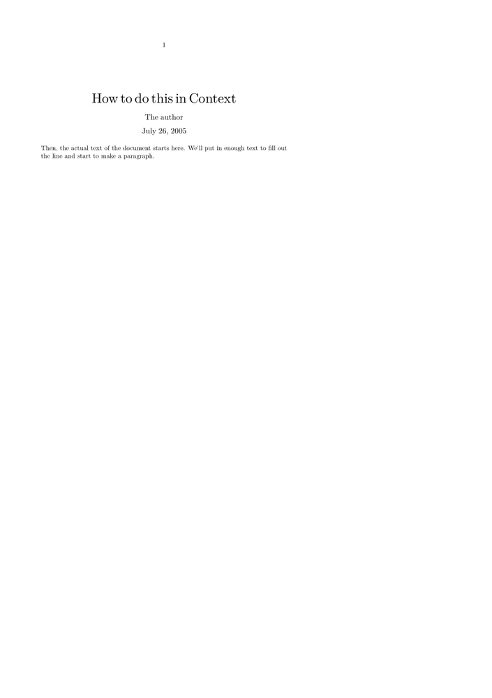
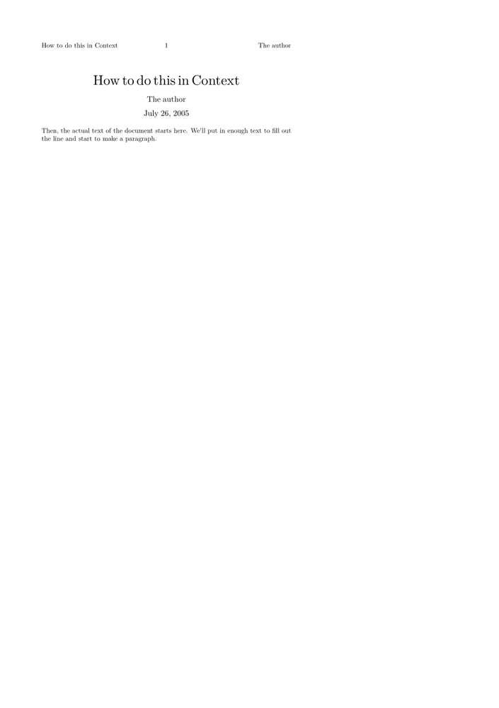

< From LaTeX to ConTeXt | Article Abstracts >
Contents
In LaTeX
The standard LaTeX document classes define a \maketitle command, along with \title, \author, and \date commands, which can be used to produce a relatively automatic title block.
\documentclass{article} \title{How to do this in Context} \author{The author} \date{July 26, 2005} \begin{document} \maketitle \end{document}
The title, author, and date defined by these commands is also used to create the PDF authoring information, if appropriate packages, like hyperref, are used. (Hyperref can set these fields using \pdfauthor{\theauthor} etc.)
In ConTeXt: A simple solution
The ConTeXt philosophy is for the author to specify the formatting, rather than selecting from existing formats. A simple solution is thus to write the title block directly; the following version is a close approximation of the version produced by the \maketitle command in LaTeX's startard article class. Obviously, the fine details of spacing and font sizes and so forth can be adjusted as desired.
\starttext \startalignment[center] \blank[2*big] {\tfd How to do this in Context} \blank[3*medium] {\tfa The author} \blank[2*medium] {\tfa July 26, 2005} \blank[3*medium] \stopalignment Then, the actual text of the document starts here. We'll put in enough text to fill out the line and start to make a paragraph. \stoptext
- 
In ConTeXt: A more reusable solution
The simple solution replicates the appearance of the LaTeX original, but it doesn't replicate the spirit of it, which is to separate the formatting from the content. We can do this by creating the following definitions, and putting them in a module file. The \title and similar commands are copied nearly directly from the LaTeX kernel, and the formatting command the same as the previous version -- note that we use \doctitle instead of \title, to avoid obliterating the \title command that ConTeXt is already using for unnumbered sections.
\unprotect \def\doctitle#1{\gdef\@title{#1}} \def\author#1{\gdef\@author{#1}} \def\date#1{\gdef\@date{#1}} \date{\currentdate} % Default to today unless specified otherwise. \def\maketitle{% \startalignment[center] \blank[force,2*big] {\tfd \@title} \blank[3*medium] {\tfa \@author} \blank[2*medium] {\tfa \@date} \blank[3*medium] \stopalignment} \protect
Suppose that we save this in the file t-title.tex. Then, we can use this in our main ConTeXt document with the following syntax, which is quite similar to the LaTeX version aside from the addition of the \usemodule[title] command in place of \documentclass{article}.
\usemodule[title] \doctitle{How to do this in Context} \author{The author} \date{July 26, 2005} \starttext \maketitle Then, the actual text of the document starts here. We'll put in enough text to fill out the line and start to make a paragraph. \stoptext
The typeset result is, of course, identical to the previous version. Now, the t-title.tex macros can be shared between any number of documents,
and changes will affect all of the documents that use this file.
In ConTeXt: A more advanced solution
The next solution use an interface inspired by the ones from the core commands and tries to go away from hard coded values.
The values for the title are set with the \setuptitle command, it provides two arguments where the second argument is optional and could be used to change the layout for the three text blocks. The title block itself is placed with the \placetitle command.
\unprotect \definesystemvariable {dt} % DocumentTitle % Expand both 1- and 2- arity'd versions of /dosetuptitle \def\setuptitle {\dodoubleempty\dosetuptitle} % The one-argument iteration: % For each comma separated item of arg1, define (dtcontent(arg1))... % using \setuptitle in your document as defined at the bottom of this file % The two-argument iteration: % For each comma separated item of arg1, and using style/color in arg2... % define (dt(arg1)(style)) and (dt(arg1)(color)) \def\dosetuptitle[#1][#2]% {\ifsecondargument \dodosetuptitle[#1][#2]% \else \dodosetuptitle[\v!content][#1]% \fi} \def\dodosetuptitle[#1][#2]% {\def\dododosetuptitle##1% {\getparameters[\??dt##1][#2]}% \processcommalist[#1]\dododosetuptitle} % Using earlier style/color definitions, apply style and color to arg1-item values \def\placetitle {\startalignment[\v!middle] \blank[\v!force,2*\v!big] \doattributes{\??dt\c!title}\c!style\c!color\@@dtcontenttitle \blank[3*\v!medium] \doattributes{\??dt\c!author}\c!style\c!color\@@dtcontentauthor \blank[2*\v!medium] \doattributes{\??dt\c!date}\c!style\c!color\@@dtcontentdate \blank[3*\v!medium] \stopalignment} % Here is where we define the key-value pairs \setuptitle [\c!title] [\c!style=\tfd, \c!color=] \setuptitle [\c!author,\c!date] [\c!style=\tfa, \c!color=] \setuptitle [\c!title=, \c!author=, \c!date=\currentdate] \protect
To reuse the definition above you could save the code in module like t-title.tex and load it in your document with \usemodule[title].
\setuptitle [title={How to do this in Context}, author={The author}, date={July 26, 2005}] \starttext \placetitle Then, the actual text of the document starts here. We'll put in enough text to fill out the line and start to make a paragraph. \stoptext
The definition for the macro \placetitle could be extended without problems to change the values for the space before and after the title block or the distance between all elements with the \setuptitle command.
With just a few extra lines and two redefined definitions in this module, like so:
\unprotect \definemarking[Author] \definemarking[Doctitle] \def\doctitle#1{\gdef\@title{#1}\marking[Doctitle]{#1}} \def\author#1{\gdef\@author{#1}\marking[Author]{#1}} % rest of the file as above
allow you to use the document title and author in your headers and footers:
\usemodule[title] \doctitle{How to do this in Context} \author{The author} \date{July 26, 2005} \setupheadertexts[{\getmarking[Doctitle]}][{\getmarking[Author]}] \starttext \maketitle Then, the actual text of the document starts here. We'll put in enough text to fill out the line and start to make a paragraph. \stoptext
- 
So, that's the title. The abstract can be handled very similarly; see Article Abstracts for details.